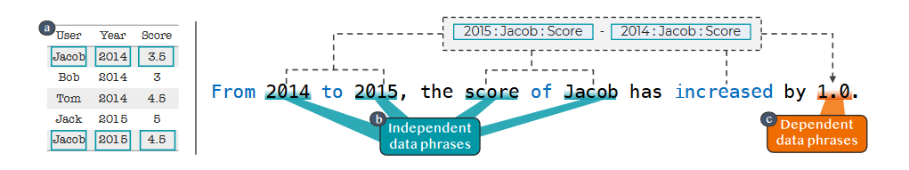
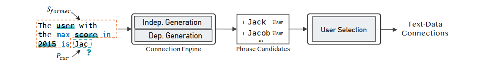
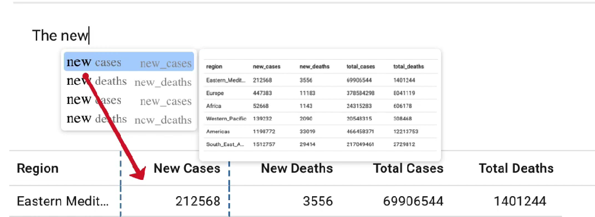
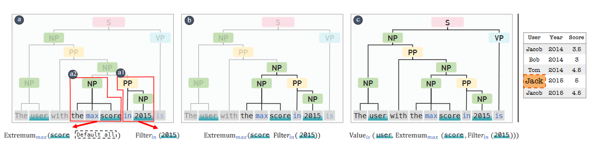
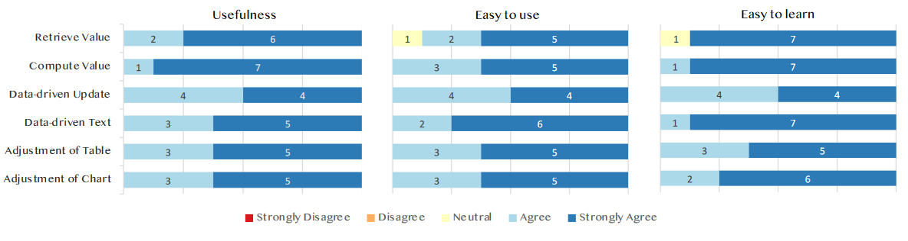

论文：CrossData: Leveraging Text-Data Connections for Authoring Data Documents
作者：Zhutian Chen，Haijun Xia
发表：CHI 2022
数据文档在记录、展示和传播数据方面有着重要的作用，尽管现在已有一些工具支持数据分析和可视化，但编写数据文档仍是一个费力的过程，人们需要在数据处理和编写工具之间来回切换。而关键问题在于文本和数据之间缺乏持久的联系。本文提出了CrossData，通过自动识别数据和文本之间的关系，来帮助对数据文档的编写。
论文链接： https://dl.acm.org/doi/pdf/10.1145/3491102.3517485
背景介绍
数据文档结合文本、表格和可视化等方式来报告数据分析的结果，在记录、展现、传播数据方面有着重要作用。尽管旨在支持数据分析、可视化的应用程序不断涌现，编写数据文档仍然是个费力的过程，工作人员需要在数据处理工具和文档编辑工具直接来回切换，来记录他们发现的见解，从数据处理工具中检索数据并将其输入到文档中。当底层数据被更新，产生了不同的见解时，他们则需要重新分析数据。
作者认为，问题的关键点在于文本和数据之间缺乏持久联系，用户需要自行记忆文本和数据之间的关联。而CrossData可以通过自动识别数据和文本之间的关系，帮助数据文档的编写。
本文贡献如下：
- 总结了当下编写数据文档存在的问题与挑战
- 提取数据-文本关联的绑定方法
- 一套有效帮助用户编写与更新文档的新颖交互技术
- CrossData原型系统
相关工作
- 编写数据驱动内容
CrossData为用户推测文本和数据之间的隐含关系，用户不需要通过编程语言手动指定数据驱动的绑定关系 - 将文本和其他视觉媒介联系起来
本工作专注数据文档领域，从数据分析人员的角度出发去思考文本可以如何与其他视觉媒介结合从而解决用户在编写文档时遇到的问题 - 数据查询和可视化的自然语言界面
NLI将文本视为命令，文本和数据之间没有持久联系，CrossData维持了连接关系
访谈研究
参与者 ：8位来自不同领域的专业人士，均有3-7年的数据分析经验。
研究结果：
- 频繁的数据检索
- 对数据一致性的维护不足
- 重大的迭代开销
实现
首先，作者将文本中的短语分为两种类型：
独立数据短语：数据集中原本就存在的内容，如属性、项目、值；可以作为参数计算出依赖数据短语
依赖数据短语：以其他数据短语为参数的操作运算的输出。

然后作者介绍了CrossData的连接引擎是如何在用户撰写文档时，为其建立、维护文本-数据的联系。整体流程可以概括为：用户输入 - 生成潜在联系列表 - 用户选择 - 建立联系&插入文本

联系同样也分为两类：
为独立数据短语建立联系：对数据集内的所有内容进行字符串匹配 以及对属性名进行同义词匹配；同义词匹配是通过计算它们词嵌入的相似度实现的，利用了已有的NLP工具Spacy；匹配情况作为建议，根据匹配得分进行排序展现给用户

为依赖数据短语建立联系：识别、集合、执行数据运算操作，将运算结果作为建议返回给用户；
识别：将短语和事先定义好的操作词典中的操作关键词进行匹配，这些关键词来自Amar等人的工作，CrossData选取了其中10个低层级的分析操作，如检索、过滤等。
集合：将输入解析为成分树；然后自底向上的检查每个节点中的独立数据短语和操作能否被集成为一个完整的数据运算、以及多个操作能否集成为复合数据运算操作。
执行：至根节点处，将运算结果返回给用户；如果遇到多种可能，将结果都列举出来。

交互
CrossData利用连接引擎建立的文本-数据关系，提供了一套交互帮助用户编写数据文档，总共分为三类：输入数据、维护数据一致性、交互式且灵活的迭代与探索。
输入数据
从数据集中获取数据是个繁琐且重复的过程，例如工作人员可能需要来回切换应用、寻找数据等
检索数据：用户输入数据，有匹配的内容就会以list的形式展现，同时辅以一些信息来消除歧义；数据表中相应的内容也会自动高亮
计算数值：用户有时需要计算一些数据集中原本不存在的数值，CrossData可以提前计算并呈现给用户
使用占位符：句子中的有些内容不是可以里面输入的，是需要依赖的数据输入后才能确定；本工作提供了一些占位符，用户可以先输入，然后CrossData在内容补充完全时会自动计算
修复错误：可能会出现一些错误的依赖数据短语关联识别；有两种方式去修正：调整依赖关系、改变操作关键词
维持一致性
底层数据变化导致文档内容也需要变化
数据驱动的更新：底层数据改变，相关的数据短语内容也会更新
操作关键词检查：一些操作关键词可能也需要修改；由于这些内容都是描述性文本，所以CrossData会高亮提醒用户而不是直接修改
交互式且灵活的迭代与探索
用户可以与文档中的数据-文本关系进行交互，从而获取一些新发现，一旦作出更改，关联的数据项也会自动改变
和数据驱动的文字交互：用户可以与基础数据连接的文本进行交互操作，交互类型取决于该数据短语关联的数据类型
图表的自动调整：CrossData可以自动对表格和图表进行文本更新，确保文本描述和数据可视化的一致性
评估
技术评估
- 能否向用户推荐正确的数据短语
- 数据集：206个与数据相关的语句，来自10个数据分析文档
- 准确率：88.8%
- 失败案例分析
缺乏语境（these three countries）、期待文本而不是数字输出（Two in five / 40%）、未覆盖的操作 - 可通过扩展引擎解决
专家评估
一共8位参与者，均有超过5年的分析数据和编写数据文档经验
- 对交互功能评价较好
- 可以很好地和当前的工作流程结合（例如安装插件）
- 观察到的其他行为（直接输入、近似数据、简单句式）

未来工作
- 支持更多的数据类型和图表形式
更丰富的数据结构和可视化形式 - 模糊数据分析和可视化的写作和编程之间的界限
将CrossData融合到计算型笔记本中 - 支持动态和互动的数据展示
如视频和动画
总结
优点：
- 原型系统实用性强
- 文章内容流畅，分析完备
缺点：
- 目前支持的句式较为简单，文章对技术评估使用的语句库的句式难度也没有过多的描述
✉️ zjuvis@cad.zju.edu.cn